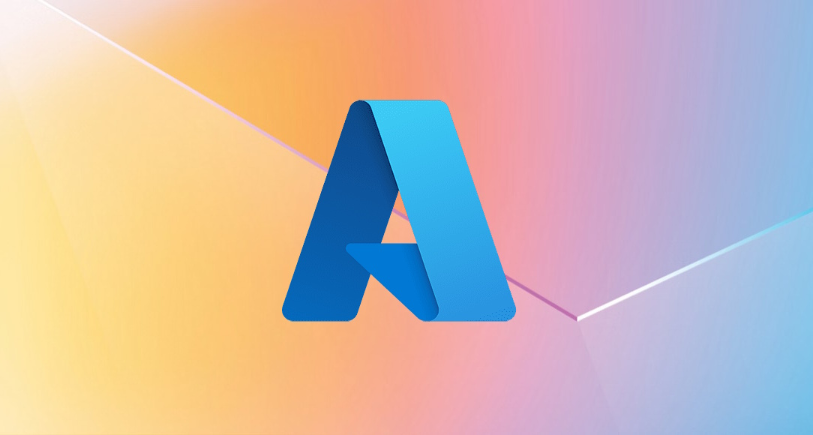
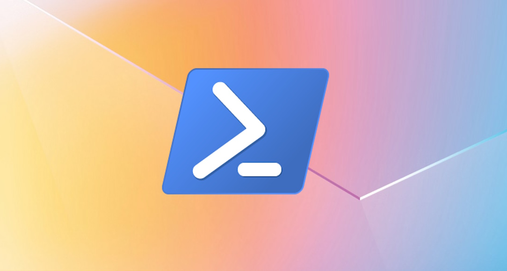

Azure Platform Engineering, AKS, Terraform & CI/CD
Enterprise-grade cloud platforms built for regulated industries. From Kubernetes orchestration and Terraform IaC to DevSecOps pipelines — helping organizations across Europe and the US ship faster, safer, and at scale.

Azure Platform Engineering & Kubernetes (AKS)
Modern enterprises run on container platforms. I architect, deploy, and operate production-grade Kubernetes environments on Azure — designed for reliability, security, and developer velocity from day one.
From greenfield AKS cluster design to scaling existing Kubernetes workloads, I bring hands-on platform engineering expertise refined across banking, military, high-tech, government, and telecom sectors. Whether you need a secure multi-tenant cluster with Azure Entra ID integration, seamless Azure DevOps pipeline connectivity, or a platform that cuts developer onboarding from months to 60 minutes — let’s build it right the first time. Azure’s 200+ integrated services are the foundation; a production-ready platform is the outcome.
Terraform, Infrastructure as Code & DevSecOps
Infrastructure that can’t be versioned, audited, or replicated is infrastructure that can’t scale. Terraform and Bicep turn your cloud environment into repeatable, secure, reviewable code — eliminating drift and manual error.
I design and implement Terraform-based infrastructure for complex Azure environments — from AKS clusters and virtual networks to identity, secrets management with HashiCorp Vault, and Rancher-managed clusters. With DevSecOps practices embedded from the start, your pipelines shift security left: automated compliance checks, secure Terraform deployments, and audit trails built in by design. Delivered for financial services, defense, pharma, and high-tech clients across Europe and the US.

CI/CD Pipelines, Azure DevOps & Automation
The fastest engineering teams don’t work harder — they deploy smarter. End-to-end CI/CD pipelines eliminate bottlenecks, reduce release risk, and let engineers focus on building — not babysitting deployments.
I design and implement Azure DevOps pipelines for Kubernetes-based workloads, integrating Terraform, Docker, Jenkins, and automated security scanning into every stage. The results are measurable: improved deployment reliability, reduced pipeline failures, and developer onboarding flows cut from months to 60 minutes. I complement modern CI/CD with PowerShell automation and Azure Functions to complete your DevOps transformation and eliminate manual toil across the entire delivery lifecycle.
What I Deliver
Kubernetes (AKS) & Container Orchestration
Production-grade AKS cluster design, deployment, and operations. Multi-tenant environments, Azure Entra ID integration, network policies, and workload scaling for regulated industries.
Azure AD / Entra ID & Identity Management
Enterprise-scale identity solutions including large-scale SSO adoption, compliance auditing, automated certificate lifecycle management via PowerShell, and granular permission delegation.
Data Engineering & Analytics
End-to-end data platform delivery using Azure Data Factory, Data Lake, Databricks, Synapse Analytics, Apache Airflow, and ML pipelines. Includes Private Link and compliance-first architectures for regulated sectors.
Azure Networking & Connectivity
Secure hybrid connectivity via VPN and Azure ExpressRoute. Private Link design, network segmentation, and datacenter-to-cloud integration for compliance-sensitive environments.
CI/CD Pipelines & Azure DevOps
End-to-end CI/CD pipeline design for Kubernetes workloads using Azure DevOps and Jenkins. Integrated Terraform, Docker, and security scanning — with proven outcomes: developer onboarding from months to 60 minutes.
Terraform & Bicep Infrastructure as Code
Repeatable, version-controlled Azure infrastructure using Terraform and Bicep. Covers AKS, networking, identity, secrets management (HashiCorp Vault), and Rancher-managed cluster deployments.
DevSecOps & Compliance
Security embedded into every pipeline stage: automated compliance checks, secrets management, secure Terraform deployments, and audit trails. Delivered for banking, pharma, defense, and government clients.
PowerShell & Systems Automation
Enterprise PowerShell automation for Azure, Windows, and hybrid environments. Covers Group Policy management, compliance reporting, CMDB integration, and legacy-to-modern platform migrations.